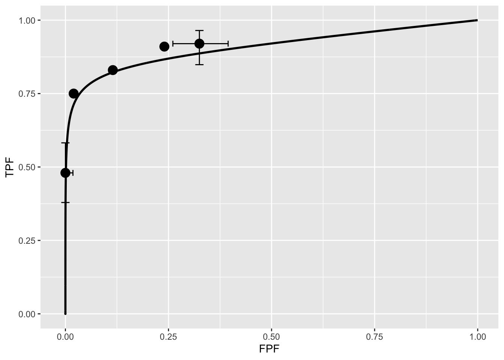

Chapter 36 RSM fitting
36.1 TBA How much finished
10%
36.2 Introduction
The radiological search model (RSM) is based on what is known, via eye-tracking measurements, about how radiologists look at medical images (Kundel et al. 2007). The ability of this model to predict search and lesion-classification expertise was described in TBA Chapter 17. If one could estimate search and lesion-classification expertise from clinical datasets then one would know which of them is limiting performance. This would provide insight into the decision making efficiency of observers. For this potential to be realized, one has to be able to reliably estimate parameters of the RSM from data, and this turned out to be a difficult problem.
To put progress in this area in context a brief historical background is needed. I have worked on and off on the FROC estimation problem since 2002, and two persons (Dr. Hong-Jun Yoon and Xuetong Zhai) can attest to the effort. Initial attempts focused on fitting the FROC curve, in the (subsequently shown to be mistaken) belief that this was using all the data. In fact unmarked non-diseased cases, which are perfect decisions, are not taken into account in the FROC plot. In addition, there are degeneracy issues, which make parameter estimation difficult except in uninteresting situations. Early work involved maximization of the FROC likelihood function. This method was applied to seven designer-level CAD datasets. With CAD data one has a large number of marks and unmarked cases are relatively rare. However, only the CAD designer knows of their existence since in the clinic only a small fraction of the marks, those whose z-samples exceed a manufacturer-selected threshold, are actually shown to the radiologist. In other words the full FROC curve, extending to the end-point, is available to the CAD algorithm designer, which makes estimation of the end-point defining parameters \(\lambda', \nu'\) trivial. Estimating the remaining parameter of the RSM is then also relatively easy.
It was gradually recognized that the FROC curve based method worked only for designer level CAD data, and not for human observer data. Consequently, subsequent effort focused on ROC curve-based fitting, and this proved successful at fitting radiologist datasets, where detailed definition of the ROC curve is not available. A preliminary account of this work can be found in a conference proceeding (Chakraborty and Svahn 2011).
The reader should be surprised to read that the research eventually turned to ROC curve based fitting, which implies that one does not even need FROC data to estimate RSM parameters. I have previously stated that the ROC paradigm ignores search, so how can one estimate search-model parameters from ROC data? The reason is that the shape of the ROC curve and the position of the upper-most observed operating point, depend on the RSM parameters, and this information can be used for a successful fitting method that is not susceptible to degeneracy.30
The chapter starts with fitting FROC curves. This is partly for historical reasons and to make contact with a method used by CAD designers. Then focus shifts to fitting ROC curves and comparing the RSM-based method to existing methods, namely the proper ROC (PROPROC) (Metz and Pan 1999; Pan and Metz 1997) and the contaminated binormal model (CBM) (Dorfman and Berbaum 2000) methods, both of which are proper ROC fitting models. These are described in more detail in TBA Chapter 20. The comparison is based on a large number of interpretations, namely, 14 datasets comprising 43 modalities, 80 readers and 2012 cases, most of which are from my international collaborations. Besides providing further evidence for the validity of the RSM, the estimates of search and lesion-classification performance derived from the fitted parameters demonstrate that there is information in ROC data that is currently ignored by analyses that do not account for search performance. Specifically, it shows that search performance is the bottleneck that is currently limiting radiologist performance.
The ability to fit RSM to clinical datasets is critical to sample size estimation – this was the practical reason why the RSM fitting problem had to be solved. Sample size estimation requires relating the wAFROC-AUC FOM to the corresponding ROC-AUC FOM in order to obtain a physically meaningful effect-size. Lacking a mathematical relationship between them, comparing the effect-sizes in the two units would be like comparing “apples and oranges”. A mathematical relation is only possible if one has a parametric model that predicts both ROC and wAFROC curves, as does the RSM. Therefore, this chapter concludes with sample size estimation for FROC studies using the wAFROC FOM. However, as long as one can predict the appropriate operating characteristic using RSM parameters, the method can be extended to other paradigms, e.g., the location ROC (LROC) (Chakraborty and Yoon 2008) paradigm.
36.3 FROC likelihood function
Recall that the likelihood function is the probability of observing the data as a function of the parameter values. FROC notation was summarized in TBA Table 13.1. Thresholds \(\overrightarrow{\zeta } \equiv \left ( \zeta_0, \zeta_1, ..., \zeta_{R_{FROC}+1}, \right )\) were defined, where \(R_{FROC}\) is the number of FROC bins, and \(\zeta_0 = -\infty\) and \(\zeta_{R_{FROC}+1} = \infty\). Since each z-sample is obtained by sampling an appropriately centered unit-variance normal distribution, the probability \(p_r\) that a latent NL will be marked and rated in FROC bin \(r\) and the probability \(q_r\) that a latent LL will be marked and rated in FROC bin \(r\) are given by:
\[\begin{equation} \left. \begin{aligned} p_r = & \Phi\left ( \zeta_{r+1} \right ) - \Phi\left ( \zeta_r \right ) \\ q_r = & \Phi\left ( \zeta_{r+1} - \mu \right ) - \Phi\left ( \zeta_r - \mu \right ) \end{aligned} \right \} \tag{36.1} \end{equation}\]
Understanding these equations is easy: the CDF function evaluated at a threshold is the probability that a z-sample is less than the threshold. The first equation is the difference between the CDF functions of a unit-normal distribution evaluated at the two thresholds. This is the probability that the NL z-sample falls in bin FROC:\(r\). The second equation gives the probability that the LL z-sample falls in bin FROC:\(r\). The probabilities \(p_r\) and \(q_r\) individually sum to unity when all bins, including the zero bin, are included.
If NL and LL events are assumed independent, the contributions to the likelihood function can be separated, and one need not enumerate counts at the individual case-level; instead, in the description that follows, one enumerates NL and LL counts in the various bins over the whole dataset.
36.3.1 Contribution of NLs
Define \(n\) (a random non-negative integer) as the total number of latent NLs in the dataset. The observed NL counts vector is \(\overrightarrow{n} \equiv \left ( n_0, n_1, ...,n_{R_{FROC}}, \right )\). Here \(n_r\) is the total number of NL counts in FROC ratings bin \(r\), \(n_0 = n - \sum_{r=1}^{R} n_r = n - N\), is the unknown number of unmarked latent NLs and \(N\) is the total number of observed NLs in the dataset. The probability \(P\left ( \overrightarrow{n} \mid n, \overrightarrow{\zeta} \right )\) of observing the NL counts vector \(\overrightarrow{n}\) is (the factorials come from the multinomial distribution):
\[\begin{equation} P\left ( \overrightarrow{n} \mid n, \overrightarrow{\zeta} \right ) = n! \prod_{r=0}^{R_{FROC}} \frac{p_r^{n_r}}{n_r!} \tag{36.2} \end{equation}\]
Since \(n\) is a random integer, the probability needs to be averaged over its Poisson distribution, i.e., one is calculating the expected value, yielding:
\[\begin{equation} P\left ( \overrightarrow{n} \mid \lambda', \overrightarrow{\zeta} \right ) = \text{pmf}_{\text{Poi}} \left ( n, K\lambda' \right ) P\left ( \overrightarrow{n} \mid n, \overrightarrow{\zeta} \right ) \tag{36.3} \end{equation}\]
In this expression \(K = K_1 + K_2\) is the total number of cases. \(\text{pmf}_{\text{Poi}} \left ( n, K\lambda' \right )\) of the Poisson distribution yields the probability of \(n\) counts from a Poisson distribution with mean \(K\lambda'\). The multiplication by the total number of cases is required because one is counting the total number of latent NLs over the entire dataset. The lower limit on \(n\) is needed because \(n\) cannot be smaller than \(N\), the total number of observed NL counts. The left hand side of Eqn. (36.3) is the probability of observing the NL counts vector \(\overrightarrow{n}\) as a function of RSM parameters. Not surprisingly, since NLs are sampled from a zero-mean normal distribution, the \(\mu\) parameter does not enter the above expression.
36.3.2 Contribution of LLs
Likewise, define \(l\) (a non-negative random integer) the total number of latent LLs in the dataset and the LL counts vector is \(\overrightarrow{l} \equiv \left ( l_0, l_1, ...,l_{R_{FROC}}, \right )\). Here \(l_r\) is the number of LL counts in FROC ratings bin \(r\), \(l_0 = l - \sum_{r=1}^{R_{FROC}} l_r = l - L\) is the known number of unmarked latent LLs and \(L\) is the total number of observed LLs in the dataset. The probability \(P\left ( \overrightarrow{l} \mid l, \mu, \overrightarrow{\zeta} \right )\) of observing the LL counts vector \(\overrightarrow{l}\) is:
\[\begin{equation} P\left ( \overrightarrow{l} \mid l, \mu, \overrightarrow{\zeta} \right ) = l! \prod_{r=0}^{R_{FROC}} \frac{q_r^{l_r}}{l_r!} \tag{36.4} \end{equation}\]
The above probability needs to be averaged over the binomial distribution of l:
\[\begin{equation} P\left ( \overrightarrow{l} \mid l, \mu, \nu', \overrightarrow{\zeta} \right ) = \sum_{l=L}^{L_{tot}}\text{pmf}_{\text{Bin}} \left ( l, L_T, \nu' \right ) P\left ( \overrightarrow{l} \mid l, \mu, \overrightarrow{\zeta} \right ) \tag{36.5} \end{equation}\]
In this expression \(L_{tot}\) is the total number of lesions in the dataset and the lower limit on \(l\) is needed because it cannot be smaller than \(L\), the total number of observed LLs. Performing the two summations using Maple, multiplying the two probabilities and taking the logarithm yields the final expression for the log-likelihood function (Yoon et al. 2007):
\[\begin{equation} LL_{FROC} \equiv LL_{FROC}\left ( \overrightarrow{n}, \overrightarrow{l} \mid \mu, \lambda', \nu' \right ) \\ = \sum_{r=1}^{R_{FROC}} \left \{ n_r log\left ( p_r \right ) + l_r log\left ( q_r \right ) \right \} \\ + N log\left ( \lambda' \right ) \\ + L log\left ( \nu' \right ) \\ - K \lambda' \left ( 1-p_0 \right ) \\ + \left ( L_T - L \right ) log \left ( 1 - \nu' + \nu' \ q_0 \right ) \tag{36.6} \end{equation}\]
36.3.3 Degeneracy problems
The product \(\lambda' \left ( 1-p_0 \right ) = \lambda'\Phi(-\zeta_1)\) reveals degeneracy in the sense that two quantities appear as a product, so that they cannot be individually separated. The effect of increasing \(\lambda'\) can be counteracted by increasing \(\zeta_1\); increasing \(\lambda'\) yields more latent NLs but increasing \(\zeta_1\) results in fewer of them being marked. The two possibilities cannot be distinguished. A similar degeneracy occurs in the term involving the product \(-\nu' + \nu' \ q_0 = -\nu'(1- q_0) = -\nu' \Phi(\mu-\zeta_1)\), where increasing \(\nu'\) can be counter balanced by decreasing \(\mu-\zeta_1\), i.e., by increasing \(\zeta_1\). Again, the effect of increasing \(\nu'\) is to produce more latent LLs, but increasing \(\zeta_1\) results in fewer of them being marked.
This is the fundamental problem with fitting RSM FROC curves to radiologist FROC data.
36.4 IDCA Likelihood function
In the limit \(\zeta_1 \rightarrow -\infty\), \(p_0 \rightarrow 0\) and \(q_0 \rightarrow 0\), and TBA Eqn. (18.6) reduces to:
\[\begin{equation} LL_{FROC}^{IDCA} = \sum_{r=1}^{R_{FROC}} \left \{ n_r log\left ( p_r \right ) + l_r log\left ( q_r \right ) \right \} \\ + N log\left ( \lambda' \right ) \\ + L log\left ( \nu' \right ) \\ - K \lambda' \\ + \left ( L_T - L \right ) log \left ( 1 - \nu' \right ) \tag{36.7} \end{equation}\]
Notice that in the limit \(\zeta_1 \rightarrow -\infty\) the degeneracy problems just described go away.
The superscript IDCA comes from “initial detection and candidate analysis” (Edwards et al. 2002). All CAD algorithms consist of an initial detection stage, which identifies possible lesion candidates. In the second stage the algorithm analyzes each candidate lesion, candidate analysis, to get a probability of malignancy. If the probability of malignancy exceeds a threshold value selected by the CAD manufacturer, and this is accomplished based on a compromise between sensitivity and specificity, and see Chapter 39 for my solution to this problem, the location of each candidate lesion satisfying the criterion is shown to the radiologist, Fig. 36.1.
FIGURE 36.1: A typical 4-view display of a patient mammogram with the CAD cues (the red arrows) turned on.
According to TBA Eqn. (17.30), in the limit \(\zeta_1 \rightarrow -\infty\) the end-point coordinates of the FROC curve represent estimates of \(\lambda', \nu'\) respectively:
\[\begin{equation} \left. \begin{aligned} \lambda' = & NLF_{max} \\ \nu' = & LLF_{max} \end{aligned} \right \} \tag{36.8} \end{equation}\]
In other words, in this limit two of the three parameters of the RSM are trivially determined from the location of the observed end-point. Suppressing all parameter independent terms, the log-likelihood function, Eqn. (36.7), reduces to:
\[\begin{equation} LL_{FROC}^{IDCA} = \sum_{r=1}^{R_{FROC}} \left \{ n_r log\left ( p_r \right ) + l_r log\left ( q_r \right ) \right \} \\ + ... \tag{36.9} \end{equation}\]
Since the ignored terms in Eqn. (36.9) are independent of model parameters they do not affect the maximization. The equation contains only one parameter, namely \(\mu\), which is implicit in the definition of \(q_r\), Eqn. (36.1).
Eqn. (36.9) resembles the log-likelihood function for the binormal model, since, according to TBA Eqn. (6.37), the LL function for the binormal model with \(R_{FROC}\) bins, is:31
\[\begin{equation} LL_{ROC} = \sum_{r=1}^{R_{FROC}} \left \{ K_{1r} log\left ( \left ( \Phi \left ( \zeta_{r+1} \right ) - \Phi \left ( \zeta_{r} \right ) \right ) \right ) + K_{2r} log\left ( \left ( \Phi\left ( b\zeta_{r+1} -a \right ) - \Phi\left ( b\zeta_{r} - a \right ) \right ) \right ) \right \} \tag{36.10} \end{equation}\]
In this equation \(K_{1r}\) is the number of counts in bin \(r\) of an ROC study consisting of \(R_{FROC}\) bins. Define the unequal-variance binormal model versions of Eqn. (36.1) as follows:
\[\begin{equation} \left. \begin{aligned} p_r' = & \Phi\left ( \zeta_{r+1} \right ) - \Phi\left ( \zeta_r \right ) \\ q_r' = & \Phi\left ( b\zeta_{r+1} - a \right ) - \Phi\left ( b \zeta_r - a \right ) \end{aligned} \right \} \tag{36.11} \end{equation}\]
Here \((a,b)\) are the parameters the unequal variance binormal model. Then Eqn. (36.10) becomes,
\[\begin{equation} LL_{ROC} = \sum_{r=1}^{R_{FROC}} \left \{ K_{1r} log\left ( p_r' \right ) + K_{2r} log\left ( q_r' \right ) \right \} \tag{36.12} \end{equation}\]
With the identifications \(K_{1r} \rightarrow n_r\) and \(K_{2r} \rightarrow l_r\), Eqn. (36.10) looks exactly like Eqn. (36.9). This implies that binormal ROC fitting method can be used to determine \(a\) and \(b\). Notice that instead of fitting an equal variance binormal model to determine the remaining single remaining \(\mu\) parameter of the RSM, one is using an unequal-variance binormal model with two parameters, \(a\) and \(b\). It turns out that the extra parameter helps. It gives some flexibility to the fitting curve to match the data.
This method of fitting FROC data was well known to CAD researchers but was first formalized in (Edwards et al. 2002).
Regard the NL marks as non-diseased “cases” (\(K_{1r} \rightarrow n_r\)) and the LL marks as diseased “cases” (\(K_{2r} \rightarrow l_r\)). Construct a pseudo-ROC counts table, analogous to TBA Table 4.1, where \(n_r\) is defined as the pseudo-FP counts in ratings bin \(r\), and likewise, \(l_r\) is defined as the pseudo-TP counts in ratings bin \(r\). The pseudo-ROC counts table has the same structure as the ROC counts table and can be fitted by the binormal model (or other alternatives).
The pseudo-FP and pseudo-TP counts can be used to define pseudo-FPF and pseudo-TPF in the usual manner; the respective denominators are the total number of NL and LL counts, respectively. These probabilities define the pseudo-ROC operating points.
The prefix “pseudo” is needed because one is regarding localized regions in a case as independent “cases”. Since the fitting algorithm assumes each rating is from an independent case, one is violating a basic assumption, but with CAD data it appears one can get away with it, because the method yields good fits, especially with the extra parameter.
The fitted FROC curve is obtained by scaling (i.e., multiplying) the ROC curve along the y-axis by \(LLF_{max}\) and along the x-axis by \(NLF_{max}\). The method is illustrated in Fig. 36.2.
FIGURE 36.2: The IDCA method of fitting designer-level CAD FROC data.
Fig. 36.2: The IDCA method of fitting designer-level CAD FROC data. In the upper half of the figure, the y-axis of the pseudo-ROC is pseudo-TPF and the x-axis is pseudo-FPF. The method is illustrated for a dataset with four FROC bins. Regarding the NLs and LLs as non-diseased and diseased cases, respectively, one constructs a table similar to Table 4.1, but this time with only four ROC bins (i.e., three non-trivial operating points). This defines the four operating points, the filled circles, including the trivial one at the upper right corner, shown in the upper half of the plot. One fits the ratings counts data using, for example, the binormal model, yielding the continuous line (based on experience the unequal variance binormal model is needed; the equal variance model does not fit as well). In practice, the operating points will not fall exactly on the fitted line. Finally, one scales (or “stretches”, or multiplies) the y-axis by \(\nu'\). Likewise, the x-axis is scaled by \(\lambda'\). This yields the continuous line shown in the lower half of the figure. Upon adding the FROC operating points one finds that they are magically fitted by the line, which is a scaled replica of the ROC fit in the upper curve.
Reference has already been made to the fact that it is necessary to assume \(\zeta_1 = -\infty\) in order to remove the degeneracy problem. This is also evident from the fact that the uppermost point in Fig. 36.2 is at (1,1). A point at the upper-right corner must correspond to \(\zeta_1 = -\infty\), another confirmation of this assumption.
Assuming binormal fitting is employed, yielding parameters \(a\) and \(b\), the equations defining the IDCA fitted FROC curve are, see TBA Eqn. (6.19) and Eqn. (6.20):
\[\begin{equation} \left. \begin{aligned} NLF(\zeta) = & \lambda' \Phi\left ( -\zeta \right ) \\ LLF(\zeta) = & \nu' \Phi\left (a -b\zeta \right ) \end{aligned} \right \} \tag{36.13} \end{equation}\]
The RSM predicted FROC curve is repeated below for convenience,
\[\begin{equation} \left. \begin{aligned} NLF(\zeta) = & \lambda' \Phi\left ( -\zeta \right ) \\ LLF(\zeta) = & \nu' \Phi\left (\mu -\zeta \right ) \end{aligned} \right \} \tag{36.14} \end{equation}\]
IDCA uses the unequal variance binormal model to fit the pseudo-ROC, which of course opens up the possibility of an inappropriate chance-line crossing and a predicted FROC curve that is non-monotonically increasing with NLF (this is always present with IDCA fits, but one would need to examine the curve near the end-point very closely to see it). In practice the unequal variance model gives visually good fits for CAD datasets.
In fact, IDCA yields excellent fits to some designer-level FROC datasets. However, the issue is not with the quality of the fits, rather the appropriateness of the FROC curve as a measure of performance, especially for human observers. For CAD the method works, so if one wished one could use IDCA to fit designer level CAD FROC data. However, with closely spaced operating points, the empirical FROC would also work and it does not involve any fitting assumptions. The issue is not fitting designer level CAD data but comparing stand-alone performance of designer level CAD to radiologists, and this is not solved by IDCA, which works for designer level CAD, but not for human observers. The latter do not report every suspicious region, no matter how low its confidence level, so the IDCA assumption \(\zeta_1 \rightarrow -\infty\) is invalid. The problem of analyzing standalone performance of CAD against a group of radiologists interpreting the same cases is addressed in TBA Chapter 22.
36.5 ROC Likelihood function
The second attempt used the ROC likelihood function. In TBA Chapter 17 expressions were derived for the coordinates (x,y) of the ROC curve predicted by the RSM, see Eqn. (17.8) and Eqn. (17.16).
\[\begin{equation} \text{FPF}\left (\zeta , \lambda'\right ) = 1 - exp\left ( -\frac{\lambda'}{2} \left [ 1-erf\left ( \frac{\zeta}{\sqrt{2}} \right ) \right ] \right )\\ \tag{36.15} \end{equation}\]
\[\begin{equation} y \equiv y\left (\zeta , \mu, \lambda', \nu', \overrightarrow{f_L} \right ) = 1 - \sum_{L=1}^{L_{max}} f_L \times \\ \left [ 1 - \left ( 1 - \frac{\nu'}{2} + \frac{\nu'}{2} \text{erf} \left ( \frac{\zeta - \mu}{\sqrt{2}} \right ) \right )^L exp\left ( -\frac{\lambda'}{2} \left [ 1-erf\left ( \frac{\zeta}{\sqrt{2}} \right ) \right ] \right ) \right ]\\ \tag{36.16} \end{equation}\]
Let \((F_r,T_r)\) denote the number of false positives and true positives, respectively, in ROC rating bin \(r\) defined by thresholds \([\zeta_r, \zeta_{r+1})\), for \(r = 0, 1, ..., R_{FROC}\). The range of \(r\) shows explicitly that \(R_{FROC}\) FROC ratings correspond to \(R_{FROC}+1\) ROC bins.32 Note that \((F_0,T_0)\) represent the known numbers of non-diseased and diseased cases, respectively, with no marks, \((F_1,T_1)\) represent the numbers of non-diseased and diseased cases, respectively, with highest rating equal to one, etc. The probability \(P_{1r}\) of a count in non-diseased ROC bin \(r\) is33 :
\[\begin{equation} P_{1r} = x\left ( \zeta_r \right ) - x\left ( \zeta_{r+1} \right )\\ \tag{36.17} \end{equation}\]
Likewise, the probability \(P_{2r}\) of a count in diseased ROC bin \(r\) is:
\[\begin{equation} P_{2r} = y\left ( \zeta_r \right ) - y\left ( \zeta_{r+1} \right )\\ \tag{36.18} \end{equation}\]
The likelihood function is, ignoring combinatorial factors that do not depend on parameters:
\[\left ( P_{1r} \right )^{F_r} \left ( P_{2r} \right )^{T_r}\]
The log-likelihood function is:
\[\begin{equation} LL_{ROC} \left ( \mu, \lambda', \nu', \overrightarrow{f_L} \right )= \sum_{r=0}^{R_{FROC}} \left [F_r log \left (P_{1r} \right ) + T_r log \left (P_{2r} \right ) \right ] \\ \tag{36.19} \end{equation}\]
The area \(AUC_{ROC}^{RSM}\left ( \mu, \lambda', \nu', \overrightarrow{f_L} \right )\) under the parametric RSM-ROC curve was obtained by numerical integration:
\[\begin{equation} AUC_{ROC}^{RSM}\left ( \mu, \lambda', \nu', \overrightarrow{f_L} \right ) = \int_{x=0}^{1} y \left ( \mu, \lambda', \nu', \overrightarrow{f_L} \right ) dx \\ \tag{36.20} \end{equation}\]
The total number of parameters to be estimated, including the \(R_{FROC}\) thresholds, is \(3+R_{FROC}\). Maximizing the likelihood function yields parameter estimates. The Broyden–Fletcher–Goldfarb–Shanno (BFGS) (Shanno and Kettler 1970; Shanno 1970; Goldfarb 1970; Fletcher 1970, 2013; Broyden 1970) minimization algorithm, as implemented as function mle2() in the R-package bbmle (Bolker and R Development Core Team 2020) was used to minimize the negative of the likelihood function. Since the BFGS algorithm varies each parameter in an unrestricted range \((-\infty, \infty)\), which would cause problems (e.g., RSM physical parameters cannot be negative and thresholds need to be properly ordered), appropriate variable transformations (both “forward” and “inverse”) were used so that parameters supplied to the log-likelihood function were always in the valid range, irrespective of values chosen by the BFGS algorithm.
The algorithm calculates the goodness of fit statistic using the method described in TBA §6.4.2. Because of the additional parameter, the degrees-of-freedom (df) of the chisquare goodness of fit statistic is \(R_{FROC} – 3\). One can appreciate that calculating goodness of fit for the RSM can fail in situations, where the corresponding statistic can be calculated for binormal model, e.g., three (non – trivial) ROC operating points, corresponding to df = 1 . With FROC data one needs at least four (non – trivial) ROC operating points, each defined by bins with at least five counts in both non-diseased and diseased categories.34
36.6 FitRsmROC implementation
The RJafroc function FitRsmROC() fits an RSM-predicted ROC curve to a binned single-modality single-reader ROC dataset. It is called by ret <- FitRsmRoc(binnedRocData, lesDistr, trt = 1, rdr = 1), where binnedRocData is a binned ROC dataset, lesDistr is the lesion distribution vector (normalized histogram) in the dataset and trt and rdr are the desired treatment and reader to extract from the dataset, each of which defaults to one.
The return value ret is a list with the following elements:
ret$muThe mean of the diseased distribution relative to the non-diseased oneret$lambdPThe Poisson parameter describing the distribution of latent NLs per caseret$nuPThe binomial success probability describing the distribution of latent LLs per diseased caseret$zetasThe RSM cutoffs, zetas or thresholdsret$AUCThe RSM fitted ROC-AUCret$StdAUCThe standard deviation of AUCret$NLLIniThe initial value of negative LLret$NLLFinThe final value of negative LLret$ChisqrFitStatsThe chisquare goodness of fit resultsret$covMatThe covariance matrix of the parametersret$fittedPlotAggplot2object containing the fitted operating characteristic along with the empirical operating points. Useprintto display the object
36.7 FitRsmROC usage example
- The following example uses the first treatment of the “FED” dataset,
dataset04, which is a 5 treatment 4 radiologist FROC dataset acquired by Dr. Federica Zanca et. al. (Zanca et al. 2009). The dataset has 5 treatments and 4 readers and 200 cases and was acquired on a 5-point integer scale, i.e., it is already binned. If not one needs to bin the dataset usingDfBinDataset(). I need to emphasize this point: if the dataset represents continuous ratings, as with a CAD algorithm, one must bin the dataset to (ideally) about 5-6 bins. The number of parameters that must be estimated increases with the number of bins (because for each additional bin one needs to estimate an additional cutoff parameter).
rocData <- DfFroc2Roc(dataset04)
lesDistr <- UtilLesionDistr(dataset04)[,2]
ret <- FitRsmRoc(rocData, lesDistr = lesDistr)The lesion distribution vector is 0.69, 0.2, 0.11. This means that fraction 0.69 of abnormal cases contain one lesion each, fraction 0.2 contain two lesions each and fraction 0.11 contain three lesions each. The fitting algorithm needs to know the distribution of lesions per case, as the fitted curve depends on this distribution. For example, all else being equal, if all abnormal cases contain one lesion, the ROC curve will be lower than if all abnormal cases contain three lesions. With increased number of lesions per case TPF increases, as there is greater chance that at least one the lesions will be marked.
The fitted parameter values are as follows (all cutoffs excepting \(\zeta_1\), the chi-square statistic (NA for this dataset) and the covariance matrix are not shown):
- \(\mu\) = 3.6551363
- \(\lambda'\) = 9.8734529
- \(\nu'\) = 0.7963126
- \(\zeta_1\) = 1.5006824
- \(AUC\) = 0.9065157
- \(\sigma (AUC)\) = 0.0231988
- \(NLLIni\) = 281.4024966
- \(NLLFin\) = 267.2673434
The meaning of the parameters is as follows. The separation parameter \(\mu\) is 3.66. The relatively large separation will result in good classification performance. The large \(\lambda'\) parameter means that on the average the observer generates 9.87 latent NL marks per image. However, because of the relatively large value of \(\zeta_1\), i.e., 1.5, only fraction 0.067 of these are actually marked, resulting in 0.66 actual marks per image. The fitting program decreased the negative of the log-likelihood function from 281.4024966 to 267.2673434. A decrease in negative log-likelihood is equivalent to an increase in the likelihood, which is as expected, as the function maximizes the log-likelihood. Because the RSM contains 3 parameters, which is one more that other ROC models, the chisquare goodness of fit statistic usually cannot be calculated, except for large datasets - the criterion of 5 counts in each bin for true positives and false positives is usually hard to meet.
Shown next is the fitted plot. Error bars (exact 95% confidence intervals) are only shown for the lowest and highest operating points.

The fitted ROC curve is proper: it’s slope decreases monotonically as one moves up the curve thereby ruling out hooks such as are predicted by the binormal model. The area under the proper ROC is 0.907 which will be shown in a subsequent chapter to be identical to that yielded by other proper ROC fitting methods and higher than the binormal model fitted value.
36.8 Discussion / Summary
Over the years, there have been several attempts at fitting FROC data. Prior to the RSM-based ROC curve approach described in this chapter, all methods were aimed at fitting FROC curves, in the mistaken belief that this approach was using all the data. The earliest was my FROCFIT software 36. This was followed by Swensson’s approach 37, subsequently shown to be equivalent to my earlier work, as far as predicting the FROC curve was concerned 11. In the meantime, CAD developers, who relied heavily on the FROC curve to evaluate their algorithms, developed an empirical approach that was subsequently put on a formal basis in the IDCA method 12.
This chapter describes an approach to fitting ROC curves, instead of FROC curves, using the RSM. On the face of it, fitting the ROC curve seems to be ignoring much of the data. As an example, the ROC rating on a non-diseased case is the rating of the highest-rated mark on that image, or negative infinity if the case has no marks. If the case has several NL marks, only the highest rated one is used. In fact the highest rated mark contains information about the other marks on the case, namely they were all rated lower. There is a statistical term for this, namely sufficiency 38. As an example, the highest of a number of samples from a uniform distribution is a sufficient statistic, i.e., it contains all the information contained in the observed samples. While not quite the same for normally distributed values, neglect of the NLs rated lower is not as bad as might seem at first.
36.9 References
References
Bolker, Ben, and R Development Core Team. 2020. Bbmle: Tools for General Maximum Likelihood Estimation. https://CRAN.R-project.org/package=bbmle.
Broyden, Charles George. 1970. “The Convergence of a Class of Double-Rank Minimization Algorithms 1. General Considerations.” Journal Article. IMA Journal of Applied Mathematics 6 (1): 76–90.
Chakraborty, Dev P., and T. Svahn. 2011. “Estimating the Parameters of a Model of Visual Search from ROC Data: An Alternate Method for Fitting Proper ROC Curves.” Journal Article. Proc. SPIE 7966 7966. https://doi.org/10.1117/12.878231.
Chakraborty, Dev P., and H. J. Yoon. 2008. “Operating Characteristics Predicted by Models for Diagnostic Tasks Involving Lesion Localization.” Journal Article. Medical Physics 35 (2): 435–45.
Dorfman, D. D., and K. S. Berbaum. 2000. “A Contaminated Binormal Model for ROC Data: Part Ii. A Formal Model.” Journal Article. Acad Radiol. 7 (6): 427–37. https://doi.org/10.1016/S1076-6332(00)80383-9.
Edwards, Darrin C, Matthew A Kupinski, Charles E Metz, and Robert M Nishikawa. 2002. “Maximum Likelihood Fitting of Froc Curves Under an Initial-Detection-and-Candidate-Analysis Model.” Medical Physics 29 (12): 2861–70.
Fletcher, Roger. 1970. “A New Approach to Variable Metric Algorithms.” Journal Article. The Computer Journal 13 (3): 317–22.
Fletcher, Roger. 2013. Practical Methods of Optimization. Book. John Wiley; Sons.
Goldfarb, Donald. 1970. “A Family of Variable-Metric Methods Derived by Variational Means.” Journal Article. Mathematics of Computation 24 (109): 23–26.
Kundel, Harold L., Calvin F. Nodine, Emily. F. Conant, and Susan P. Weinstein. 2007. “Holistic Component of Image Perception in Mammogram Interpretation: Gaze-Tracking Study.” Journal Article. Radiology 242 (2): 396–402.
Metz, C. E., and X. Pan. 1999. “Proper Binormal ROC Curves: Theory and Maximum-Likelihood Estimation.” Journal Article. J Math Psychol 43 (1): 1–33.
Pan, Xiaochuan, and Charles E Metz. 1997. “The ‘Proper’ Binormal Model: Parametric Receiver Operating Characteristic Curve Estimation with Degenerate Data.” Journal Article. Academic Radiology 4 (5): 380–89.
Shanno, David F. 1970. “Conditioning of Quasi-Newton Methods for Function Minimization.” Journal Article. Mathematics of Computation 24 (111): 647–56.
Shanno, David F, and Paul C Kettler. 1970. “Optimal Conditioning of Quasi-Newton Methods.” Journal Article. Mathematics of Computation 24 (111): 657–64.
Yoon, H. J., Bin Zheng, B. Sahiner, and Dev P. Chakraborty. 2007. “Evaluating Computer-Aided Detection Algorithms.” Journal Article. Medical Physics 34 (6): 2024–38.
Zanca, Federica, Jurgen Jacobs, Chantal Van Ongeval, Filip Claus, Valerie Celis, Catherine Geniets, Veerle Provost, Herman Pauwels, Guy Marchal, and Hilde Bosmans. 2009. “Evaluation of Clinical Image Processing Algorithms Used in Digital Mammography.” Journal Article. Medical Physics 36 (3): 765–75. https://doi.org/10.1118/1.3077121.
Degenerate datasets are defined as those that do not provide any interior data points, i.e., all operating points lie on the edges of the ROC square, i.e., enclosed by the four lines defined by FPF = 0 or 1 and TPF = 0 or 1.↩︎
The number of ROC bins exceeds the number of FROC bins by one.↩︎
The rating bookkeeping can be confusing. Basically, \(r = 0\) corresponds to unmarked cases, \(r = 1\) corresponds to cases where the highest rated FROC mark was rated 1, etc., and \(r = R_{FROC}\) corresponds to cases where the highest rated FROC mark was rated \(R_{FROC}\).↩︎
One needs to subtract the CDF evaluated at \(r+1\) from that at \(r\); the CDF is the complement of x, which results in the reversal. It should also make sense because the higher indexed x is to the right of the lower indexed one. Recall that the operating points are numbered starting from the top-right and working down.↩︎
With three operating points, each defined by bins with at least five counts in both non-diseased and diseased categories, the number of usable ROC bins is four. Subtracting three one gets \(df = 1\), and the statistic can be calculated. However, because of the extra RSM parameter, the corresponding \(df = 0\).↩︎